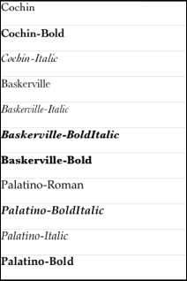
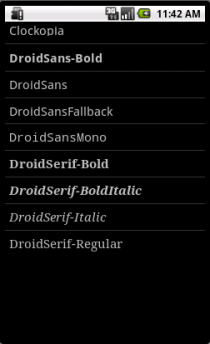

This example application demonstrates how to count, load, and manage a device fonts for your NativeUI applications.
|  |  |
| On IOS | On Android |
Note: This example only works on Android and iOS devices at this time.
This example is included in the MoSync SDK installation in the /examples folder. For information on importing the examples into your workspace, see Importing the Examples.
When this application is started, it will present a list of the fonts that are installed in the device and the user can access, using a ListView widget. For devices that include more fonts than the screen can fit, the user is able to scroll through them.
The project consists of a single file called main.cpp.